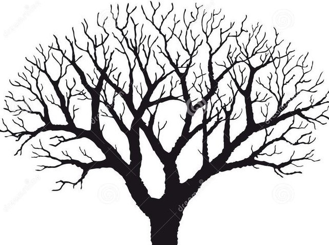

The epidermis is the outer layer of the stem. It adds stability and protects the plant from wind and rain. It is able to do this because its cells are wax-coated. This is like the foundation of the highway.

PHLOEM
one of the transport tubes of the plant, moving sugars, which are used for energy, around the plant. This is essentially the food of the plant, so the phloem's job is to distribute food.
XYLEM
transport tube, like the phloem, but instead of transporting food, it transports water and minerals from the roots. It also provides the bulk of the plant's support system and is the more woody part of the plant.
NODE
Nodes are the places on a stem where leaves and buds are found (the exits or intersections), and internodes are the areas in between nodes.